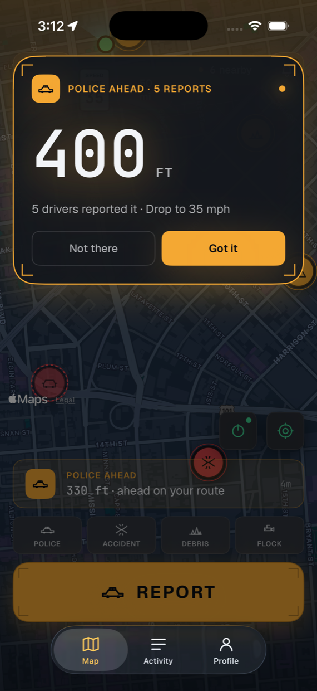
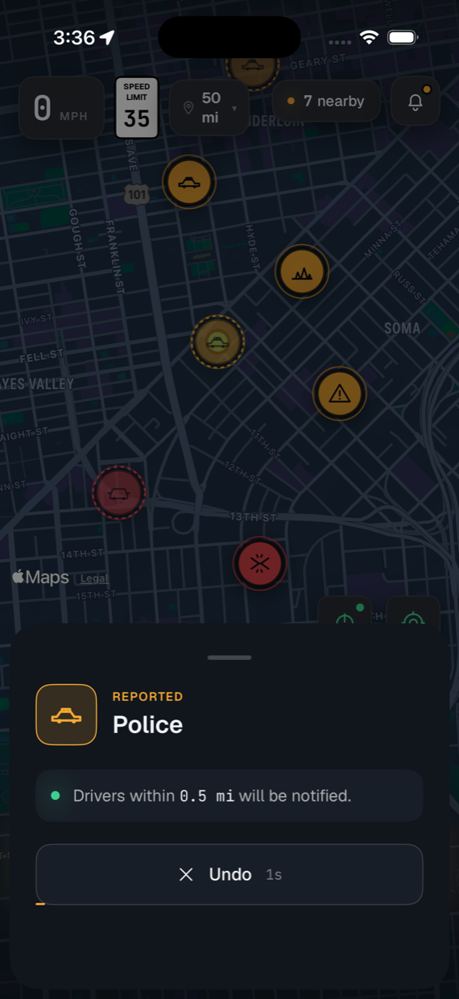
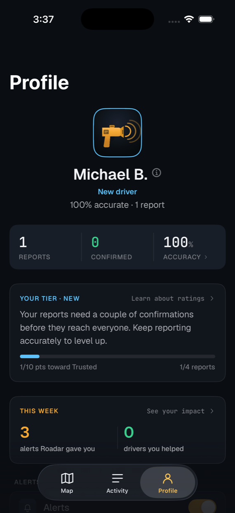
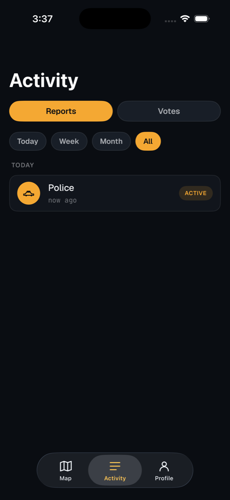
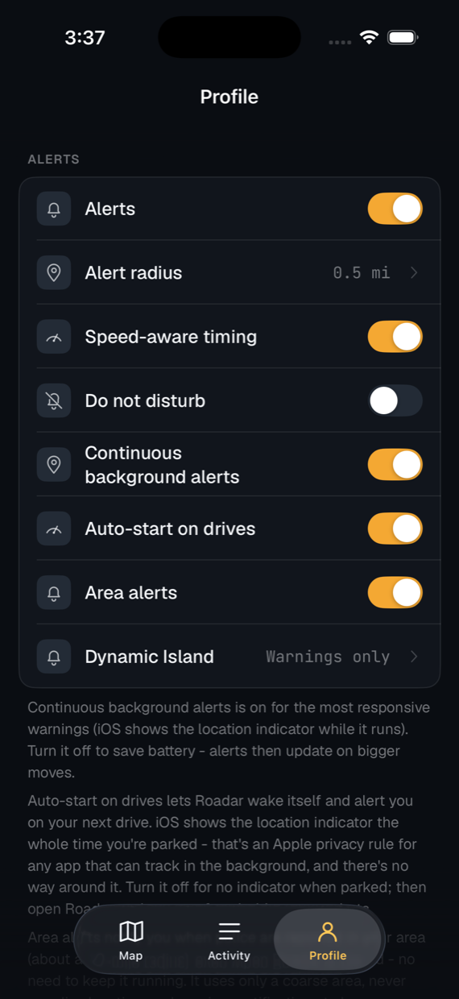
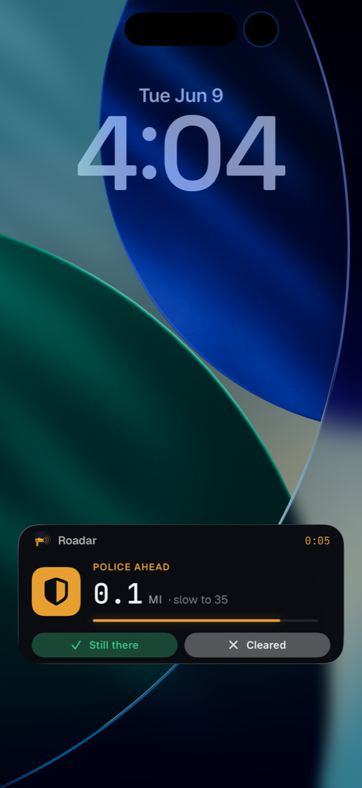
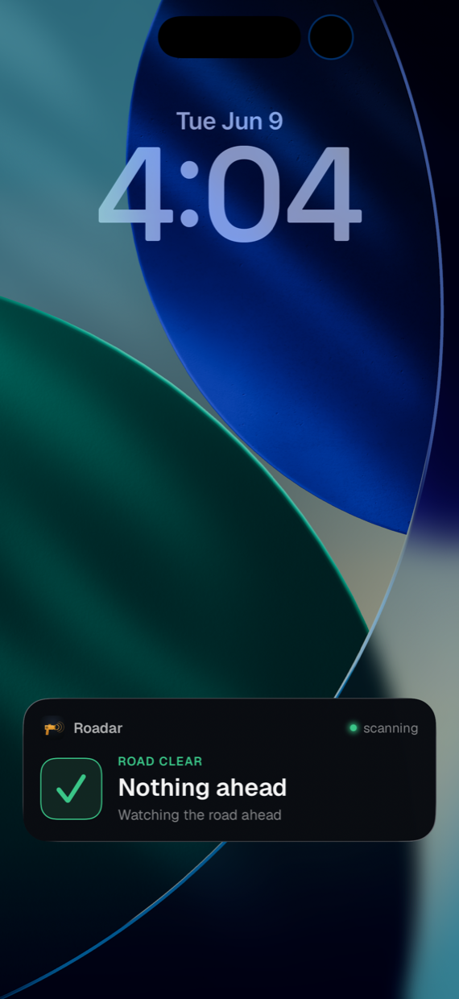
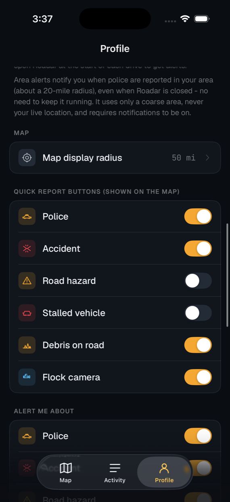

Roadar is built around the iPhone surfaces you actually use while driving. Set it up once, then keep your eyes where they belong.
A report inside your alert radius starts a Live Activity that updates in real time. It runs on the Lock Screen, in the Dynamic Island, and on CarPlay. One quiet ping, then the countdown.
Enforcement close ahead takes over the whole screen. 0.4 miles, 0.2, 400 feet. Then it clears.
Every alert shows how many drivers corroborated it. This is a real screenshot.

Map the Action Button to your most-used report. Or use the Home Screen widget, the Control Center control, or Siri. One press files at your spot. Five seconds to undo, every time.
Changed your mind later? Take a report down from the Activity tab within 24 hours, until three drivers have confirmed it.

Honest reporting earns weight. Bad-faith disputes lose it. Your profile shows your tier, your accuracy, and the drivers you helped this week.
No follower count, no leaderboard, nothing to game.

The Activity tab keeps your reports and your votes in one place. Filter by today, this week, or this month.
Filed something by mistake? Take it down right there, until three drivers have confirmed it.
Visible only to you. Other drivers never see your history.

Alert radius (default 0.5 mi) and map radius (default 50 mi) are independent. Tune them to your actual commute.
Speed-aware timing warns you earlier the faster you're going. Do not disturb silences everything with one switch. Auto-start wakes Roadar on your next drive.
A live speed readout with the posted limit beside it. Units and haptics are yours to set too.

The Live Activity holds the Lock Screen for the whole drive. Amber when something's ahead. Green when the road is clear. Grant Always location and it works with the app closed too.


On by default for the most responsive warnings. Switch to the lighter battery-saving mode in Settings.
Police, accidents, and road hazards reported in your wider area push a notification even when the app is fully closed.
Background location is used only to evaluate proximity to nearby reports. Nothing is stored.

One press files at their location, with five seconds to undo. You can still take it down later if no one has confirmed it yet.
Anyone within about a mile can confirm the report or mark it cleared. Confirmations extend its life. Disputes shorten it.
When the report sits on your route inside your alert radius, Roadar fires a single notification and a Live Activity.
Set Roadar up before you drive, or have a passenger operate it. Obey all traffic laws and speed limits. You are responsible for the safe, attentive operation of your vehicle at all times.
Roadar speaks English, Spanish, and Russian. Pick your language on the very first screen - or anytime in Settings - and every alert, screen, widget, Live Activity, and Siri phrase follows.
Roadar is intended for use in the United States to support the lawful, good-faith sharing of information about public road conditions among drivers. That is protected expression under the First Amendment. Use the app only for lawful purposes.
Free to download and use. No subscription, no ads, no in-app purchases.